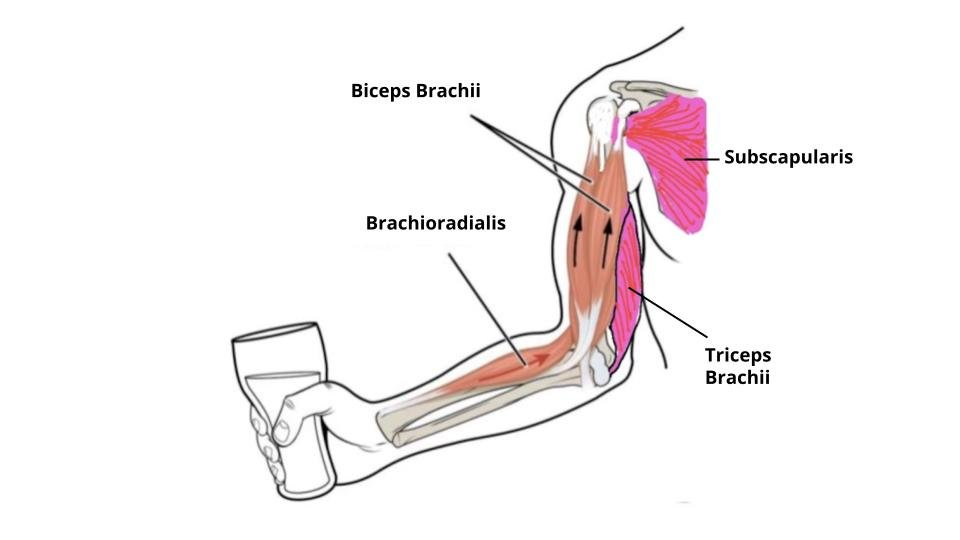

길항근 (Antagonist Muscle)

| # | 원문 | 한국어 | 설명 |
|---|---|---|---|
| 1 | Biceps Brachii | 상완이두근(주동근) | |
| 2 | Subscapularis | 견갑하근(고정근) | |
| 3 | Brachioradialis | 상완요골근(협력근) | |
| 4 | Triceps Brachii | 상완삼두근(길항근) |
쉽게 풀면
길항근은 주동근이 하는 일과 정반대 방향으로 작용해 균형을 잡아주는 동료 배우에 비유할 수 있다. 팔꿈치를 굽힐 때 이두근이 주동근이라면, 팔 뒷면의 삼두근은 그 반대 동작(펴는 동작)을 담당하는 길항근이 된다. 주동근이 움직이는 동안 길항근은 적당히 힘을 빼거나 때로는 살짝 힘을 유지해 관절이 부드럽고 안정적으로 움직이도록 돕는다.
왜 중요한가
재활의학과 스포츠과학에서는 주동근과 길항근의 근력 균형이 무너지면 관절 부상 위험이 커진다는 근거로 길항근 근력을 함께 평가하고 훈련하는 것을 표준적인 접근으로 다루며, 대표적으로 무릎의 대퇴사두근(주동근)과 슬굴곡근(길항근) 간 근력 비율이 십자인대 부상 위험 평가에 핵심적으로 활용된다. 길항근의 동시수축 정도는 관절 안정성과 동작 효율을 동시에 좌우하므로, 근전도 연구와 재활 프로그램 설계에서 주동근과 함께 반드시 평가되며, 훈련에 따른 길항근 활성 감소는 신경 적응의 증거로 해석된다.
어디에 있고 어떻게 생겼나
- 길항근은 특정 관절 동작에서 주동근과 반대 방향의 동작을 만드는 근육이다. 이름은 고정된 것이 아니라 동작을 기준으로 붙는 상대적 이름이다.
- 팔꿈치 굽힘에서는 상완이두근이 주동근이고 상완삼두근이 길항근이며, 펴기에서는 반대가 된다.
- 무릎에서는 대퇴사두근(폄)과 햄스트링(굽힘), 발목에서는 전경골근(발등굽힘)과 비복근·가자미근(발바닥굽힘)이 대표적인 쌍이다.
- 길항근이 하나만 있는 것은 아니다. 한 동작에 여러 근육이 길항근으로 참여하고, 협력근과 함께 동작을 조절한다.
근육군 이름과 역할 이름은 다르다. 근육군에는 흔히 단축성 수축 때 만드는 관절 동작으로 이름을 붙인다(예: 팔꿈치 굽힘근). 그러나 이 이름이 그 근육군이 단축될 때만 주동근이라는 뜻은 아니다. 덤벨 컬에서 들어 올리는 단계에는 팔꿈치 굽힘근이 짧아지며 주동근이 되고, 내리는 단계에는 굽힘근이 길어지면서도 하중과 동작을 조절하므로 여전히 주동근이다. 두 단계 모두에서 팔꿈치 폄근이 길항근이다.
정의의 상대성. 길항 작용은 특정 근육이나 근육군의 고유한 성질이 아니다. 길항근은 주동근과 반대 방향의 관절 토크를 내어 동작을 늦추거나 조절하며, 특히 빠른 탄도성 동작에서 그렇다. 길항 쌍은 흔히 관절 반대편의 굴곡근과 신전근이지만 삼각근처럼 이런 쌍이 없는 근육도 있다.
맡은 기능
- 상호억제: 주동근이 수축할 때 척수의 억제 회로가 길항근의 활동을 줄여 동작을 매끄럽게 한다.
- 동시수축: 정교하거나 빠른 동작, 관절이 불안정한 상황에서는 길항근이 주동근과 함께 활동해 관절을 안정시킨다. 무릎에서 햄스트링의 동시수축이 전방 경골 전위를 줄이는 역할이 보고되었다(Baratta et al., 1988).
- 제동: 빠른 동작이 끝나는 지점에서 관절이 지나치게 움직이지 않도록 길항근이 에너지를 흡수한다.
- 균형의 지표: 햄스트링 대 대퇴사두근 근력비(H:Q 비)는 부상 위험과 재활 판정에 자주 쓰인다. 전통적인 등속성 비는 0.6 안팎이 흔히 언급되지만, 측정 속도와 수축 형태, 종목에 따라 기준이 달라 단일 기준값은 없다. 이 점을 보완하려고 햄스트링의 신장성 수축 근력을 대퇴사두근의 단축성 수축 근력으로 나누는 ‘기능적 비’가 제안되었다(Aagaard et al., 1998).
길항근의 정의. 길항근은 주동근과 반대 방향의 관절 토크를 내는 근육이다. 이 토크는 동작 조절을 돕고, 특히 아주 빠른 탄도성 동작에서는 움직임을 늦추는 제동 역할을 한다. 팔굽혀펴기의 올라가는 단계에서 상완삼두근은 단축성 수축으로, 내려가는 단계에서는 신장성 수축으로 팔꿈치 동작을 조절하는 주동근이며, 이때 반대 토크를 내는 근육이 길항근이다.
상호억제의 신경 경로. 샤링턴이 도입한 개념으로, 주동근에 수축 신호를 보내면 길항근에 억제 신호가 간다. 근방추의 구심 섬유가 척수에서 갈라져 한 가지는 같은 근육의 알파운동뉴런을 흥분시켜 반사를 만들고, 다른 가지는 억제 중간뉴런을 활성화해 반대쪽 근육의 알파운동뉴런을 억제한다. 효과는 짧고 불완전하며 자세 긴장도의 영향을 받는다.
연구에서 다루는 방식
- 근전도(EMG)로 길항근 활성을 재고, 동시수축 정도를 지수로 계산한다. 계산식(예: 길항근 활성 ÷ 두 근육 활성의 합)이 연구마다 달라 식을 밝혀야 비교할 수 있다.
- 등속성 근력 검사로 주동근과 길항근의 최대 토크를 재고 비율을 보고한다. 속도(예: 60°/s)와 수축 형태를 함께 적는다.
- 훈련 뒤 길항근 활성이 줄어드는 변화는 신경 적응의 증거로 해석되곤 하지만, 근전도 신호의 정규화 방법이 결과를 바꿀 수 있으므로 신중해야 한다.
- 길항근을 ‘방해하는 근육’이 아니라 동작과 안정성을 함께 조절하는 근육으로 해석한다.
수축 형태를 함께 기록. 같은 근육이 동작 단계에 따라 단축성 또는 신장성으로 수축하므로, 길항근 활성을 보고할 때는 동작 단계와 수축 형태를 함께 적어야 다른 연구와 비교할 수 있다.
동시활성의 양면. 주동근과 길항근이 함께 약하게 활동하는 동시활성은 정상이며 관절을 뻣뻣하게 한다. 지나치거나 통제되지 않으면 문제가 되고, 대퇴사두근과 햄스트링이 높은 강도로 동시에 수축하면 햄스트링 파열이 생길 수 있다는 예가 든다. 주동근을 돕는 근육(협력근)은 원치 않는 움직임을 막으면 중화근이라 부른다.
논문에서는 이렇게 쓰입니다
실제 논문에서
이 용어를 직접 쓴 국내 논문 문장은 아직 모으지 못했다. 모이는 대로 출처와 함께 싣는다.
예시 문장
아래 예문은 용어의 쓰임을 보이려고 만든 것으로, 실제 논문 문장이 아니다.
동시수축이 단순한 방해가 아니라 관절 안정화와 정교한 동작 조절에 쓰인다는 점을 보이는 예문이다. 이 주제는 Enoka(2015)의 신경역학 교재 등에서 다룬다.
주동근과 길항근 사이의 근력 불균형이 실제 부상 위험과 관련될 수 있음을 보여주는 결과다.
조금 더 깊게 보면
길항근은 주동근이 수축하는 동안 신경계의 상호억제 기전을 통해 활성이 감소하지만, 정교하거나 빠른 동작에서는 관절을 안정화하기 위해 오히려 동시수축(co-contraction)이 일어나기도 한다는 점이 단순한 억제 관계로만 설명되지 않는 부분이다.
길항근의 역할은 관절 안정성 확보와 급격한 동작 시 제동 기능까지 포함해 폭넓게 다뤄진다. 햄스트링 대 대퇴사두근 근력비처럼 길항근 균형이 부상 예방 지표로 쓰이지만, 어느 비율이 안전한지는 측정 방식과 종목에 따라 달라 단일 기준을 두기 어렵다.
주의할 점
길항근을 단순히 '방해하는 근육'으로 오해해서는 안 되며, 적절한 길항근의 긴장과 협응이 오히려 관절을 보호하고 정교한 동작을 가능하게 하는 필수적인 역할을 한다는 점을 이해해야 한다. 다만 길항근의 과도한 동시수축은 관절 안정성을 높이지만 동작 속도와 효율성을 저하시킬 수 있다.
헷갈리기 쉬운 용어
근육의 역할 이름은 서로 얽혀 쓰인다.
참고 문헌
- Aagaard, P., Simonsen, E. B., Magnusson, S. P., Larsson, B., & Dyhre-Poulsen, P. (1998). A new concept for isokinetic hamstring: quadriceps muscle strength ratio. The American Journal of Sports Medicine, 26(2), 231–237.
- Baratta, R., Solomonow, M., Zhou, B. H., Letson, D., Chuinard, R., & D'Ambrosia, R. (1988). Muscular coactivation: the role of the antagonist musculature in maintaining knee stability. The American Journal of Sports Medicine, 16(2), 113–122.
- Kandel, E. R., Schwartz, J. H., Jessell, T. M., Siegelbaum, S. A., & Hudspeth, A. J. (Eds.). (2013). Principles of Neural Science (5th ed.). McGraw-Hill.
- Wikipedia contributors. (n.d.). Anatomical terms of muscle. In Wikipedia, The Free Encyclopedia.
- Wikipedia contributors. (n.d.). Reciprocal inhibition. In Wikipedia, The Free Encyclopedia.
표의 기준값은 위 문헌에 따른 관례이고, 분야·학술지마다 기준이 다를 수 있다.